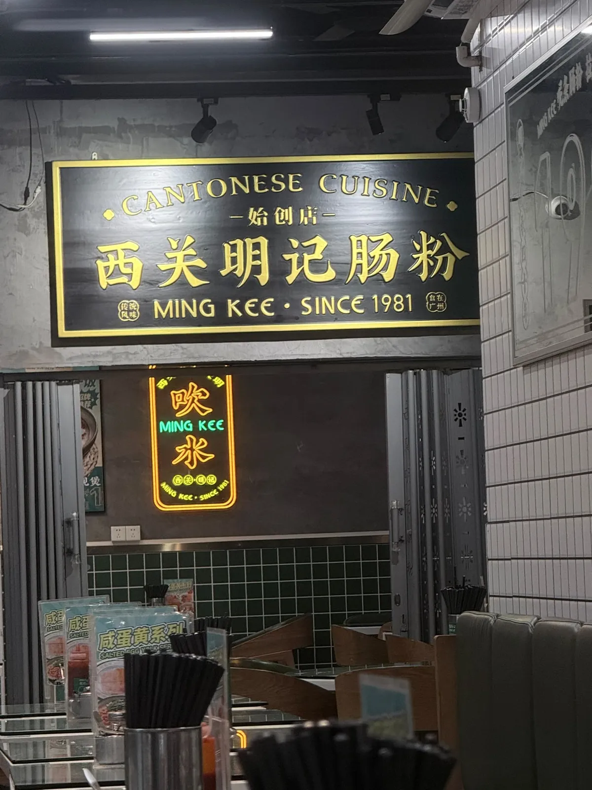
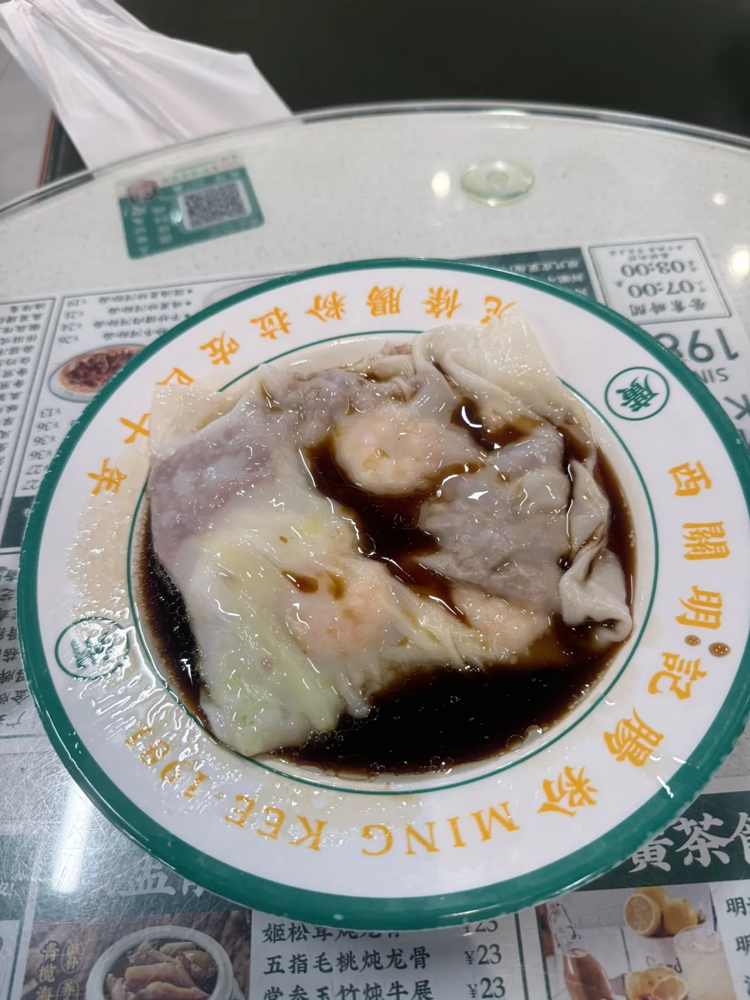
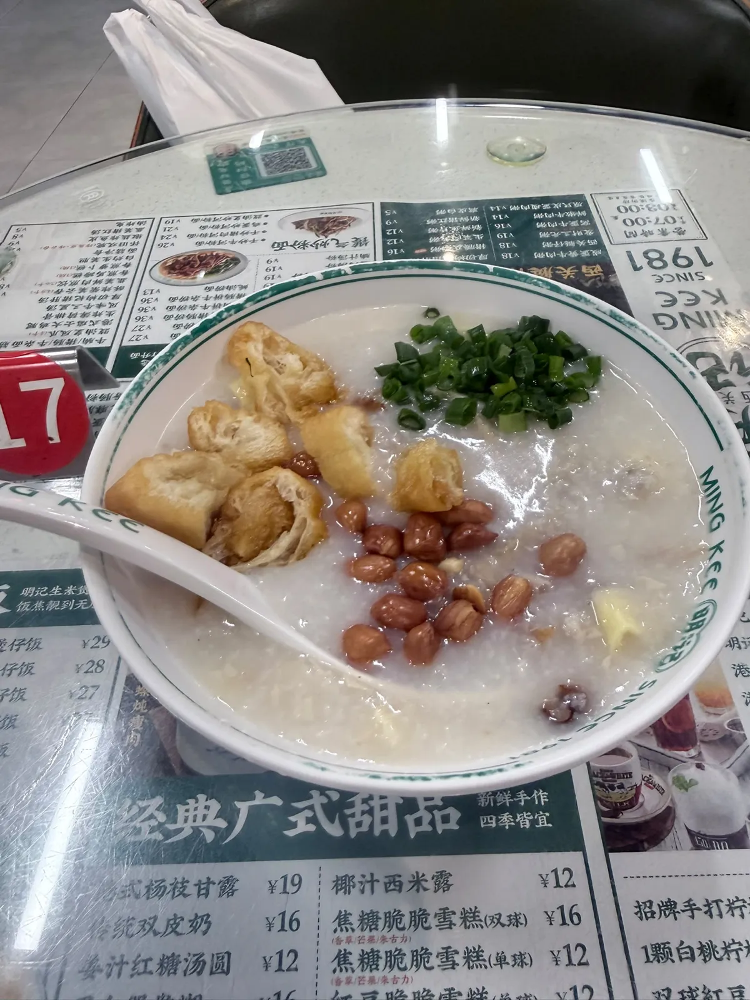
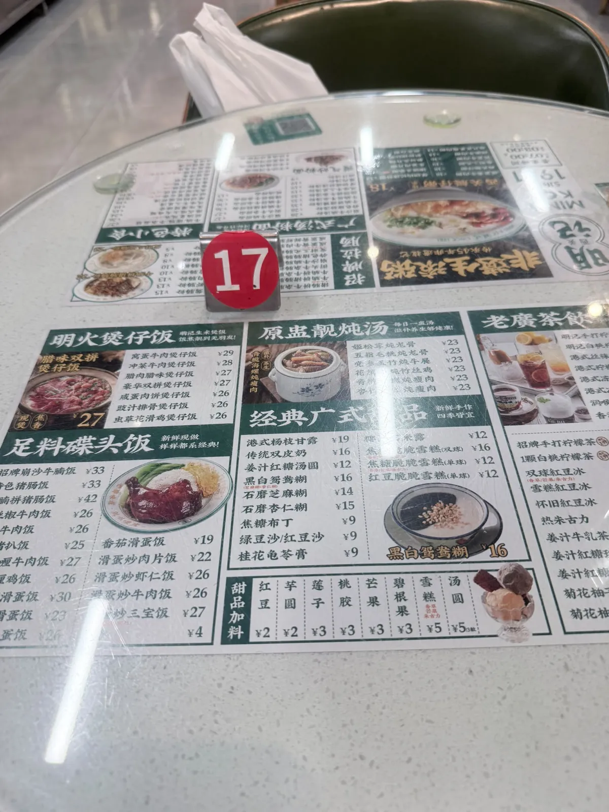
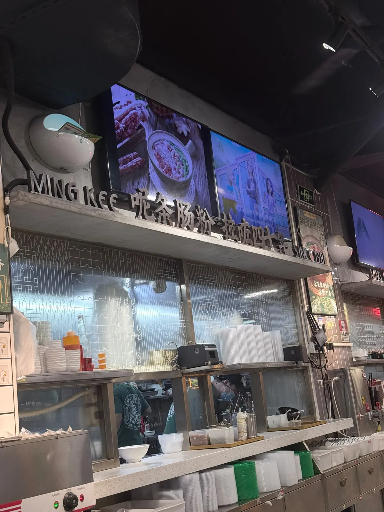

西關明記腸粉（荔灣店）：四十年功力套餐團購 ¥26.8
廣州荔灣龍津西路一間腸粉店，就喺泮溪酒家隔籬。2026-09-08 下午去，用咗張「四十年功力招牌套餐」團購券，實付 ¥26.8，食咗招牌拉腸「發財三元」同西關艇仔粥，自費。一句總結：腸粉好滑，有返以前布拉腸嗰種感覺；足料、新鮮，廿六蚊八抵食，會翻兜。下面順便對一對套餐標價同平台零售價 ¥39 呢條數點樣夾得返。
食咗咩，同幾多錢
當日紀錄
到訪日期：
點咗咩：
實付：
平台標零售價：
營業時間：
地址同點去：
過關之後想即刻有數據、唔使換實體卡，可以睇 。 ⚠️ 呢條係 Klook 上網卡嘅總表，入面搵「中國」就係。連分類頁唔連單一產品頁，係因為單一產品下架會變 404，分類頁唔會。本站部分連結為推廣連結，經此類連結消費本站可能獲得佣金，價格不受影響。

價錢、榜單同人流呢啲嘢會變，所以佢哋抽咗出嚟獨立標明核實月份 —— 實食紀錄呢個分區嘅硬規則之一。正文只留唔會變嗰部分。同區另一篇同樣拆團購券數字嘅紀錄：小楊生煎（深圳坪山益田店）。
招牌拉腸「發財三元」

套餐嗰份係招牌拉腸「發財三元」：牛肉、鮮蝦、豬肝三樣一齊，套餐內標價 ¥22。
腸粉好滑，有返以前布拉腸嗰種感覺。料足、新鮮。
西關艇仔粥

套餐另一半係西關艇仔粥，套餐內標價 ¥17。同樣足料、新鮮。
三個價錢數字
平台數據（大眾點評，唔係本站評分）
評分：
榜單同紀錄：
同店其他團購：

三個數放埋一齊睇：平台人均 ¥27、平台標零售價 ¥39、本站實付 ¥26.8。
先講最容易誤讀嗰個。人均 ¥27 唔係「一個人食大約 ¥27」，佢係平台把所有帳單除人頭嘅滾動平均。
再講張券。套餐入面兩件嘢嘅標價係拉腸 ¥22 加艇仔粥 ¥17，加埋啱啱好 ¥39 —— 同平台標嗰個零售價一模一樣。即係話呢張券同小楊生煎嗰張唔同：抵嗰 ¥12.2 全部嚟自團購折扣本身（約 6.9 折），唔係嚟自「夾埋做套餐平過單點」。兩件嘢單點加埋同套餐零售價一樣，套餐本身冇額外組合優惠。
順帶記低同店另外兩個套餐同一張代金券嘅價，喺上面資料塊 —— 本站冇試過嗰三項，只係當日見到嘅價，擺喺度俾你自己比。
值唔值得專登去
本站判斷
判斷：

去嘅時候係下午，下午時段人最少。店內好有西關感覺。店員多，上菜快。冷氣夠凍。
位置好近泮溪酒家 —— 如果你本身就係去泮溪酒家嗰一帶，呢間可以順路。
總結：廿六蚊八，抵食，會翻兜。
常見問題
「人均 ¥27」係咪即係我一個人食大約 ¥27？
唔係。嗰個係平台把所有帳單除人頭嘅滾動平均。本站呢次用團購券實付 ¥26.8，而套餐入面兩件嘢嘅標價加埋係 ¥39。要估自己會俾幾多，睇單點價同套餐價，準過睇人均。
張團購券實際平咗幾多？
平台標零售價 ¥39、實付 ¥26.8，即係平咗 ¥12.2，大約 6.9 折。留意套餐內兩件嘢嘅標價係拉腸 ¥22 加艇仔粥 ¥17，加埋啱啱好就係 ¥39 —— 所以呢張券嘅折扣全部嚟自團購本身，唔係嚟自套餐組合。
幾點去人最少？
本站嗰次係下午去，下午時段人最少。營業時間見上面資料塊，不過嗰個係平台資料唔係商戶公布，出發前自己再確認。
同泮溪酒家有幾近？
好近，平台地址本身就寫住「近泮溪酒家」。如果你行緊荔灣湖公園嗰一帶，兩間可以擺埋同一日。